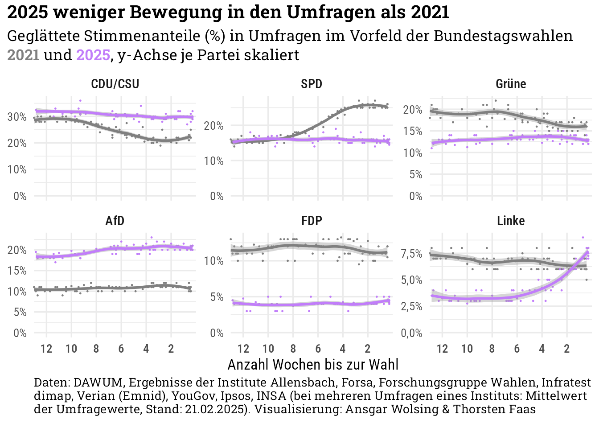
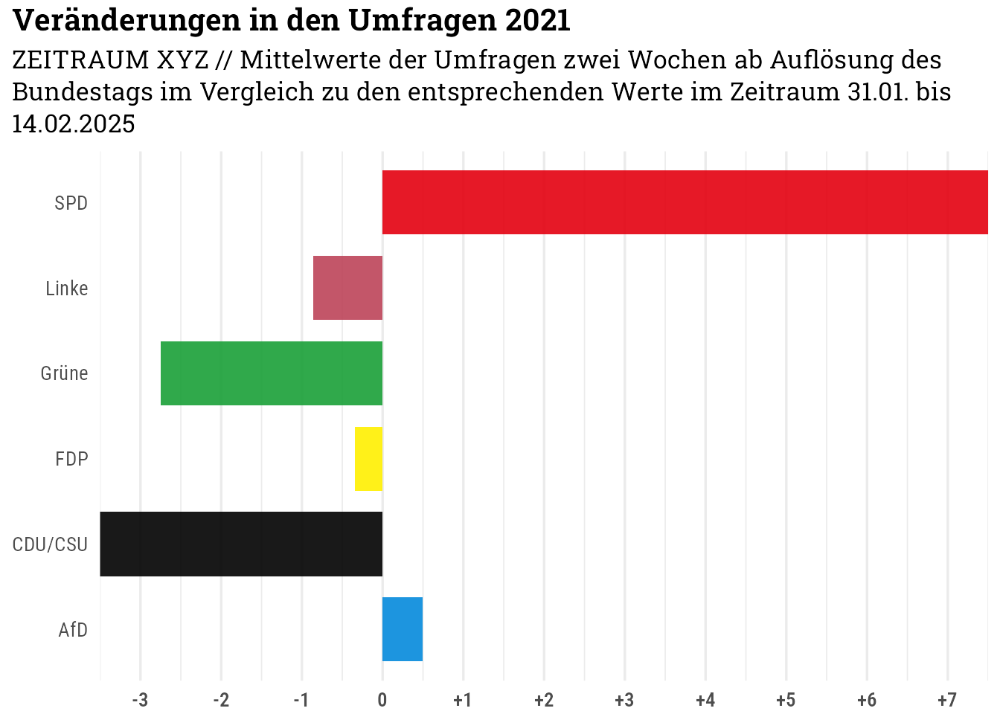

Code
library(tidyverse)
library(ggtext)
library(here)
library(rvest)
library(dawumr)
library(gt)
knitr::opts_chunk$set(dev = "ragg_png")
source(here("R", "custom-theme.R"))
theme_set(theme_custom())library(tidyverse)
library(ggtext)
library(here)
library(rvest)
library(dawumr)
library(gt)
knitr::opts_chunk$set(dev = "ragg_png")
source(here("R", "custom-theme.R"))
theme_set(theme_custom())Auf https://www.wahlrecht.de/umfragen/politbarometer.htm sind die Umfrageergebnisse der Forschungsgruppe Wahlen seit 1998 verfügbar - sowohl Projektion als auch die politische Stimmung.
# Links zu den Jahres-Unterseiten sammeln
base_url <- "https://www.wahlrecht.de/umfragen"
start_page_projektion_url <- "https://www.wahlrecht.de/umfragen/politbarometer.htm"
start_page_projektion <- read_html(start_page_projektion_url)
links_projektion <- start_page_projektion |>
html_nodes(css = "a") |>
html_attr("href")
links_projektion <- links_projektion[str_detect(links_projektion, "politbarometer-")]
start_page_stimmung_url <- "https://www.wahlrecht.de/umfragen/politbarometer/stimmung.htm"
start_page_stimmung <- read_html(start_page_stimmung_url)
links_stimmung <- start_page_stimmung |>
html_nodes(css = "a") |>
html_attr("href")
links_stimmung <- paste("politbarometer",
links_stimmung[str_detect(links_stimmung, "stimmung-")],
sep = "/")links_kombi <- c(start_page_projektion_url, start_page_stimmung_url,
paste(base_url, c(links_projektion, links_stimmung), sep = "/"))
tables <- map(links_kombi, function(x) {
read_html(x) |>
html_nodes("table.wilko") |>
html_table()
})
tables <- set_names(tables, str_remove(links_kombi, base_url))tables_aktuell <- c(pluck(tables, "/politbarometer/stimmung.htm"),
pluck(tables, "/politbarometer.htm"))
names(tables_aktuell) <- c("stimmung", "projektion")
df_stimmung <- tables_aktuell[["stimmung"]][, -c(2, 12)] |>
tail(nrow(tables_aktuell[["stimmung"]]) - 3) |>
rename(datum = 1) |>
pivot_longer(cols = -c(datum), names_to = "partei", values_to = "anteil") |>
filter(!str_detect(datum, "^Wahl")) |>
mutate(
anteil = str_remove_all(anteil, "[-%]"),
anteil = as.numeric(anteil),
datum = dmy(datum)
) |>
# Unentschlossene und Nichtwähler + Summe entfernen
filter(!partei %in% c("Unent-schlossene", "Nicht-wähler", "Summe"))
projektion_colnames <- as.character(tables_aktuell[["projektion"]][1, ])
projektion_colnames[c(1, 2, 12)] <- c("datum", "X1", "X2")
colnames(tables_aktuell[["projektion"]]) <- projektion_colnames
df_projektion <- tables_aktuell[["projektion"]] |>
select(-c(X1, X2)) |>
tail(nrow(tables_aktuell[["stimmung"]]) - 3) |>
filter(Zeitraum != "Bundestagswahl") |>
pivot_longer(cols = -c(datum, Befragte, Zeitraum),
names_to = "partei", values_to = "anteil") |>
mutate(
anteil = str_remove_all(anteil, "[-%]"),
anteil = as.numeric(anteil),
datum = dmy(datum)
)
df_poba_kombi <- df_projektion |>
left_join(df_stimmung, by = join_by(datum, partei),
suffix = c(".projektion", ".stimmung"))tables_2017 <- c(pluck(tables, "/politbarometer/stimmung-2017.htm"),
pluck(tables, "/politbarometer/politbarometer-2017.htm"))
names(tables_2017) <- c("stimmung", "projektion")
df_stimmung_2017 <- tables_2017[["stimmung"]][, -c(2, 10)] |>
tail(nrow(tables_2017[["stimmung"]]) - 3) |>
rename(datum = 1) |>
pivot_longer(cols = -c(datum), names_to = "partei", values_to = "anteil") |>
filter(!str_detect(datum, "^Wahl")) |>
mutate(
anteil = str_remove_all(anteil, "[-%]"),
anteil = as.numeric(anteil),
datum = dmy(datum)
) |>
# Unentschlossene und Nichtwähler + Summe entfernen
filter(!partei %in% c("Unent-schlossene", "Nicht-wähler", "Summe")) |>
filter(!is.na(anteil))
projektion_colnames_2017 <- as.character(tables_2017[["projektion"]][1, ])
projektion_colnames_2017[c(1, 2, 10)] <- c("datum", "X1", "X2")
colnames(tables_2017[["projektion"]]) <- projektion_colnames_2017
df_projektion_2017 <- tables_2017[["projektion"]] |>
select(-c(X1, X2)) |>
tail(nrow(tables_2017[["stimmung"]]) - 3) |>
filter(Zeitraum != "Bundestagswahl") |>
pivot_longer(cols = -c(datum, Befragte, Zeitraum),
names_to = "partei", values_to = "anteil") |>
mutate(
anteil = str_remove_all(anteil, "[-%]"),
anteil = as.numeric(anteil),
datum = dmy(datum)
) |>
filter(!is.na(anteil))
df_poba_kombi_2017 <- df_projektion_2017 |>
left_join(df_stimmung_2017, by = join_by(datum, partei),
suffix = c(".projektion", ".stimmung")) |>
filter(!is.na(anteil.stimmung))tables_2013 <- c(pluck(tables, "/politbarometer/stimmung-2013.htm"),
pluck(tables, "/politbarometer/politbarometer-2013.htm"))
names(tables_2013) <- c("stimmung", "projektion")
df_stimmung_2013 <- tables_2013[["stimmung"]][, -c(2, 10)] |>
tail(nrow(tables_2013[["stimmung"]]) - 3) |>
rename(datum = 1) |>
pivot_longer(cols = -c(datum), names_to = "partei", values_to = "anteil") |>
filter(!str_detect(datum, "^Wahl")) |>
mutate(
anteil = str_remove_all(anteil, "[-%]"),
anteil = as.numeric(anteil),
datum = dmy(datum)
) |>
# Unentschlossene und Nichtwähler + Summe entfernen
filter(!partei %in% c("Unent-schlossene", "Nicht-wähler", "Summe")) |>
filter(!is.na(anteil))
projektion_colnames_2013 <- as.character(tables_2013[["projektion"]][1, ])
projektion_colnames_2013[c(1, 2, 11)] <- c("datum", "X1", "X2")
colnames(tables_2013[["projektion"]]) <- projektion_colnames_2013
df_projektion_2013 <- tables_2013[["projektion"]] |>
select(-c(X1, X2)) |>
tail(nrow(tables_2013[["stimmung"]]) - 3) |>
filter(Zeitraum != "Bundestagswahl") |>
pivot_longer(cols = -c(datum, Befragte, Zeitraum),
names_to = "partei", values_to = "anteil") |>
mutate(
anteil = str_remove_all(anteil, "[-%]"),
anteil = as.numeric(anteil),
datum = dmy(datum)
) |>
filter(!is.na(anteil))
df_poba_kombi_2013 <- df_projektion_2013 |>
left_join(df_stimmung_2013, by = join_by(datum, partei),
suffix = c(".projektion", ".stimmung")) |>
filter(!is.na(anteil.stimmung))df_poba_kombi |>
bind_rows(df_poba_kombi_2013) |>
bind_rows(df_poba_kombi_2017) |>
filter(!partei %in% c("BSW", "FW", "PIRATEN", "Sonstige")) |>
mutate(
partei = case_match(
partei,
"GRÜNE" ~ "Grüne",
"LINKE" ~ "Linke",
.default = partei
),
partei = factor(partei, levels = c("CDU/CSU", "SPD", "AfD", "Grüne", "FDP", "Linke")),
anteil.differenz = anteil.projektion - anteil.stimmung
) |>
ggplot(aes(datum)) +
geom_hline(aes(yintercept = 0)) +
geom_smooth(
aes(y = anteil.differenz),
col = color_pal[2], linewidth = 0.8,
method = "loess", span = 0.5) +
scale_x_date(
date_breaks = "4 years",
date_labels = "%Y"
) +
scale_y_continuous(
breaks = seq(-10, 10, 2),
labels = scales::label_number(style_positive = "plus", suffix = "%")) +
facet_wrap(vars(partei)) +
labs(
title = "Projektion vs. politische Stimmung nach Parteien",
subtitle = "Ein positiver Wert bedeutet, dass ein Partei in einer Projektion einen höheren Anteil der Stimmen erhält als sie in der politischen Stimmung hat",
caption = "Daten: Politbarometer (geglättete Werte)",
x = NULL, y = "Anteil (%)"
) +
theme(
strip.text = element_text(family = "Roboto Condensed SemiBold", size = 11)
)df_dawum <- pull_dawum_dataframe()selected_institutes <- c("Allensbach", "Forsa", "Forschungsgruppe Wahlen", "Infratest dimap",
"Verian (Emnid)", "YouGov", "Ipsos", "INSA")
date_election_2021 <- as_date("2021-09-27")
date_election_2025 <- as_date("2025-02-23")
campaign_duration <- duration("3 months")
df_dawum_long <- df_dawum |>
filter(Parliament_Shortcut == "Bundestag" & Institute_Name %in% selected_institutes) |>
filter(Party_Shortcut %in% c("CDU/CSU", "SPD", "Grüne", "FDP", "AfD", "Linke")) |>
mutate(
date_field = Survey_Period_Start +
difftime(Survey_Period_End, Survey_Period_End, unit = "days") / 2) |>
filter(
# date_field >= date_election_2021 - campaign_duration & date_field < date_election_2021 |
# date_field >= date_election_2025 - campaign_duration & date_field < date_election_2025
Date >= date_election_2021 - campaign_duration & Date < date_election_2021 |
Date >= date_election_2025 - campaign_duration & Date < date_election_2025
) |>
mutate(
election_year = year(date_field),
election_year = ifelse(election_year %in% 2024:2025, 2025, election_year),
election_year = factor(election_year),
week = isoweek(date_field),
days_until_election = case_when(
# election_year == 2021 ~ date_election_2021 - date_field,
# election_year == 2025 ~ date_election_2025 - date_field
election_year == 2021 ~ date_election_2021 - Date,
election_year == 2025 ~ date_election_2025 - Date
),
days_until_election = as.integer(days_until_election)
) |>
# Pro Institute nur eine Umfrage pro Woche TODO
group_by(Institute_Name, election_year, week, Party_Shortcut) |>
summarize(
share = mean(Share),
days_until_election = round(mean(days_until_election)),
.groups = "drop") |>
mutate(Party_Shortcut = fct_reorder(Party_Shortcut, -share))
p <- df_dawum_long |>
ggplot(aes(days_until_election, share, color = election_year)) +
geom_point(size = 0.2) +
geom_smooth(
aes(),
method = "loess", span = 0.5
) +
scale_x_reverse(
expand = c(0, 0),
breaks = seq(98, 1, -14),
labels = function(x) x / 7) +
scale_y_continuous(labels = scales::label_number(decimal.mark = ",", suffix = "%")) +
scale_color_manual(values = c("grey50", color_pal[3])) +
coord_cartesian(xlim = c(NA, 0), ylim = c(0, NA), clip = "off") +
labs(
title = "2025 weniger Bewegung in den Umfragen als 2021",
subtitle = sprintf("Geglättete Stimmenanteile (%%) in Umfragen im Vorfeld der
Bundestagswahlen <b style='color:%s'>2021</b> und
<b style='color:%s'>2025</b>",
"grey50", color_pal[3]),
caption = paste("Daten: DAWUM, Ergebnisse der Institute",
paste(selected_institutes, collapse = ", "),
"(bei mehreren Umfragen eines Instituts: Mittelwert der Umfragewerte, Stand: 21.02.2025).",
"Visualisierung: Ansgar Wolsing & Thorsten Faas"),
x = "Anzahl Wochen bis zur Wahl", y = NULL
) +
theme(
legend.position = "none", legend.justification = "left",
panel.grid.minor.x = element_blank()
)p + facet_wrap(vars(Party_Shortcut)) p + facet_wrap(vars(Party_Shortcut), scales = "free_y") +
labs(
subtitle = sprintf("Geglättete Stimmenanteile (%%) in Umfragen im Vorfeld der Bundestagswahlen
<b style='color:%s'>2021</b> und <b style='color:%s'>2025</b>,
y-Achse je Partei skaliert",
"grey50", color_pal[3]),
)
df_dawum_long |>
ggplot(aes(days_until_election, share, color = election_year)) +
geom_point(size = 0.2) +
geom_smooth(
aes(),
method = "loess", span = 0.5
) +
scale_x_reverse(expand = c(0, 0)) +
scale_y_continuous(labels = scales::label_number(decimal.mark = ",", suffix = "%")) +
scale_color_manual(values = c("grey50", color_pal[3])) +
coord_cartesian(xlim = c(NA, 0), # ylim = c(0, NA),
clip = "off") +
facet_wrap(Party_Shortcut ~ election_year, scales = "free_y", ncol = 2) +
labs(
subtitle = sprintf("Geglättete Stimmenanteile (%%) in Umfragen im Vorfeld der
Bundestagswahlen <b style='color:%s'>2021</b> und <b style='color:%s'>2025</b>,
y-Achse je Partei skaliert",
"grey50", color_pal[3]),
caption = paste("Daten: DAWUM, Ergebnisse der Institute",
paste(selected_institutes, collapse = ", "),
"(Stand: 21.02.2025).",
"Visualisierung: Ansgar Wolsing & Thorsten Faas"),
x = "Anzahl Tage bis zur Wahl", y = NULL
) +
theme(
legend.position = "none", legend.justification = "left"
)df_dawum_long |>
ggplot(aes(days_until_election, share, color = election_year)) +
geom_point(size = 0.2) +
geom_smooth(
aes(),
method = "loess", span = 0.5
) +
scale_x_reverse(expand = c(0, 0)) +
scale_y_continuous(labels = scales::label_number(decimal.mark = ",", suffix = "%")) +
scale_color_manual(values = c("grey50", color_pal[3])) +
coord_cartesian(xlim = c(NA, 0), # ylim = c(0, NA),
clip = "off") +
facet_grid(rows = vars(election_year), cols = vars(Party_Shortcut), scales = "free_y",
space = ) +
labs(
subtitle = sprintf("Geglättete Stimmenanteile (%%) in Umfragen im Vorfeld der
Bundestagswahlen <b style='color:%s'>2021</b> und <b style='color:%s'>2025</b>,
y-Achse je Partei skaliert",
"grey50", color_pal[3]),
caption = paste("Daten: DAWUM, Ergebnisse der Institute",
paste(selected_institutes, collapse = ", "),
"(Stand: 21.02.2025).",
"Visualisierung: Ansgar Wolsing & Thorsten Faas"),
x = "Anzahl Tage bis zur Wahl", y = NULL
) +
theme(
legend.position = "none", legend.justification = "left"
)Quelle: Wahlrecht.de
df_umfragen_2005 <- read_delim(here("data", "umfragen-2005.tsv"))date_election_2005 <- as_date("2005-09-18")
df_umfragen_2005_long <- df_umfragen_2005 |>
mutate(Datum = dmy(Datum)) |>
filter(year(Datum) == 2005 & Datum < date_election_2005) |>
select(-Sonstige) |>
pivot_longer(cols = -c(Datum, Institut), names_to = "partei", values_to = "anteil") |>
mutate(days_until_election = as.numeric(date_election_2005 - Datum))df_umfragen_2005_long |>
# LTW NRW
filter(Datum >= as_date("2005-05-27")) |>
ggplot(aes(days_until_election, anteil)) +
geom_point(size = 0.5) +
geom_smooth(method = "loess", span = 0.5) +
scale_x_reverse() +
facet_wrap(vars(partei))df_umfragen_2005_long |>
# LTW NRW
filter(Datum >= as_date("2005-05-27")) |>
filter(partei %in% c("CDU/CSU", "SPD")) |>
ggplot(aes(days_until_election, anteil)) +
geom_smooth(
aes(col = partei),
method = "loess", span = 0.5) +
geom_point(
aes(col = partei),
size = 0.5) +
scale_x_reverse() +
scale_y_continuous(minor_breaks = seq(0, 100, 2)) +
coord_cartesian(ylim = c(20, NA)) +
scale_color_manual(values = party_pal) +
theme(
legend.position = "top",
legend.justification = "left"
)
#facet_wrap(vars(partei))df_dawum_long |>
rename(partei = Party_Shortcut, anteil = share) |>
filter(election_year == 2025) |>
filter(partei %in% c("CDU/CSU", "SPD", "AfD", "Grüne")) |>
ggplot(aes(days_until_election, anteil)) +
geom_smooth(
aes(col = partei),
method = "loess", span = 0.5) +
geom_point(
aes(col = partei),
size = 0.5) +
scale_x_reverse() +
scale_y_continuous(minor_breaks = seq(0, 100, 2)) +
coord_cartesian(ylim = c(10, NA)) +
scale_color_manual(values = party_pal) +
theme(
legend.position = "top",
legend.justification = "left"
)polls_period <- duration("2 weeks")
df_umfragen_2005_long |>
# jeweils einen Monat ab
# Auflösung Bundestag am 21.07.2005
filter(Datum >= as_date("2005-07-21"), Datum <= date_election_2005) |>
mutate(
partei = case_match(
partei,
"GRÜNE" ~ "Grüne",
.default = partei
),
period = case_when(
Datum <= min(Datum) + polls_period ~ "Anfang",
Datum >= max(Datum) - polls_period ~ "Ende"
),
period = factor(period, levels = c("Anfang", "Ende"))
) |>
filter(!is.na(period)) |>
group_by(partei, period) |>
summarize(mean_anteil = mean(anteil)) |>
summarize(diff_mean_anteil = last(mean_anteil) - first(mean_anteil)) |>
ggplot(aes(diff_mean_anteil, partei)) +
geom_col(
aes(fill = partei),
alpha = 0.9, width = 0.75) +
scale_x_continuous(
breaks = seq(-10, 10, 1),
labels = scales::label_number(style_positive = "plus", decimal.mark = ",")) +
scale_fill_manual(values = party_pal) +
coord_cartesian(xlim = c(-3, 7)) +
guides(fill = "none") +
labs(
title = "Veränderungen in den Umfragen 2005",
subtitle = "Mittelwerte der Umfragen zwei Wochen ab Auflösung des Bundestags
im Vergleich zu den entsprechenden Werte bis zwei Wochen vor der Wahl",
x = NULL, y = NULL
) +
theme(
panel.grid.major.y = element_blank(),
axis.text.y = element_text(family = "Roboto Condensed SemiBold")
)
df_dawum |>
filter(Parliament_Shortcut == "Bundestag" & Institute_Name %in% selected_institutes) |>
filter(Party_Shortcut %in% c("CDU/CSU", "SPD", "Grüne", "FDP", "AfD", "Linke")) |>
filter(Date >= as_date("2021-07-01") & Date <= date_election_2021) |>
# Pro Institute nur eine Umfrage pro Woche
mutate(
week = isoweek(Date),
) |>
group_by(Institute_Name, Party_Shortcut, week) |>
summarize(
anteil = mean(Share),
Date = min(Date),
.groups = "drop") |>
mutate(
period = case_when(
Date <= min(Date) + polls_period ~ "Anfang",
Date >= max(Date) - polls_period ~ "Ende"
),
period = factor(period, levels = c("Anfang", "Ende"))) |>
select(period, partei = Party_Shortcut, Institute_Name, anteil) |>
filter(!is.na(period)) |>
group_by(partei, period) |>
summarize(mean_anteil = mean(anteil)) |>
summarize(diff_mean_anteil = last(mean_anteil) - first(mean_anteil)) |>
ggplot(aes(diff_mean_anteil, partei)) +
geom_col(
aes(fill = partei),
alpha = 0.9, width = 0.75) +
scale_x_continuous(
breaks = seq(-10, 10, 1),
labels = scales::label_number(style_positive = "plus", decimal.mark = ",")) +
scale_fill_manual(values = party_pal) +
coord_cartesian(xlim = c(-3, 7)) +
guides(fill = "none") +
labs(
title = "Veränderungen in den Umfragen 2021",
subtitle = "ZEITRAUM XYZ // Mittelwerte der Umfragen zwei Wochen ab Auflösung des Bundestags
im Vergleich zu den entsprechenden Werte im Zeitraum 31.01. bis 14.02.2025",
x = NULL, y = NULL
) +
theme(
panel.grid.major.y = element_blank()
)
df_dawum |>
filter(Parliament_Shortcut == "Bundestag" & Institute_Name %in% selected_institutes) |>
filter(Party_Shortcut %in% c("CDU/CSU", "SPD", "Grüne", "FDP", "AfD", "Linke")) |>
filter(Date >= as_date("2024-12-27") & Date <= date_election_2025) |>
# Pro Institute nur eine Umfrage pro Woche
mutate(
week = isoweek(Date),
) |>
group_by(Institute_Name, Party_Shortcut, week) |>
summarize(
anteil = mean(Share),
Date = min(Date),
.groups = "drop") |>
mutate(
period = case_when(
Date <= min(Date) + polls_period ~ "Anfang",
Date >= max(Date) - polls_period ~ "Ende"
),
period = factor(period, levels = c("Anfang", "Ende"))) |>
select(period, partei = Party_Shortcut, Institute_Name, anteil) |>
filter(!is.na(period)) |>
group_by(partei, period) |>
summarize(mean_anteil = mean(anteil)) |>
summarize(diff_mean_anteil = last(mean_anteil) - first(mean_anteil)) |>
ggplot(aes(diff_mean_anteil, partei)) +
geom_col(
aes(fill = partei),
alpha = 0.9, width = 0.75) +
scale_x_continuous(
breaks = seq(-10, 10, 1),
labels = scales::label_number(style_positive = "plus", decimal.mark = ",")) +
scale_fill_manual(values = party_pal) +
coord_cartesian(xlim = c(-3, 7)) +
guides(fill = "none") +
labs(
title = "Veränderungen in den Umfragen 2025",
subtitle = "Mittelwerte der Umfragen zwei Wochen ab Auflösung des Bundestags
im Vergleich zu den entsprechenden Werte im Zeitraum 31.01. bis 14.02.2025",
x = NULL, y = NULL
) +
theme(
panel.grid.major.y = element_blank()
)library(haven)
library(labelled)
df_rcs_2021 <- read_dta(here("data", "RCS", "ZA7703_v2-0-0.dta"))
# Nur Vorwahlwelle
df_rcs_2021 <- df_rcs_2021 |>
filter(welle == 1)df_rcs_2021 |>
mutate(pre045 = as_factor(pre045)) |>
count(pre045) |>
mutate(share = n / sum(n)) |>
gt() |>
fmt_percent(share)| Meinungsumfragen: Wahrnehmung | n | share |
|---|---|---|
| keine Angabe | 1 | 0.02% |
| weiss nicht | 17 | 0.37% |
| ja | 3238 | 70.98% |
| nein | 1306 | 28.63% |
Bildungs- und Transformationsgewicht (gesamt)
df_rcs_2021 |>
mutate(pre045 = as_factor(pre045)) |>
count(pre045, wt = w_bil1g) |>
mutate(share = n / sum(n)) |>
gt() |>
fmt_percent(share)| Meinungsumfragen: Wahrnehmung | n | share |
|---|---|---|
| keine Angabe | 0.1749103 | 0.00% |
| weiss nicht | 15.2260236 | 0.35% |
| ja | 2929.7234121 | 68.17% |
| nein | 1352.7929889 | 31.48% |
df_rcs_2021 |>
filter(pre045 > 0) |>
mutate(pre045 = as_factor(pre045)) |>
count(pre045, wt = w_bil1g) |>
mutate(share = n / sum(n)) |>
mutate(label_pos_y = lead(share, default = 0) + share / 2) |>
ggplot(aes(1, share, fill = pre045)) +
geom_col(position = "stack", col = "white") +
geom_richtext(
aes(y = label_pos_y,
label = sprintf("**%s**<br>%s", pre045, scales::percent(share)),
col = ifelse(pre045 == "ja", "white", "black")
),
family = "Roboto Condensed", size = 5,
fill = NA, label.size = 0
) +
scale_fill_manual(values = c(color_pal[2], "grey60")) +
scale_color_identity() +
coord_radial(theta = "y", inner.radius = 0.5, expand = FALSE,
direction = -1) +
guides(fill = "none") +
labs(
title = "Zwei Drittel der Befragten nehmen während<br>des Wahlkampfs
Meinungsumfragen wahr",
subtitle = "Anteil der Befragten, die im Wahlkampf 2021 in der Woche vor der Befragung Umfragen gesehen oder gelesen haben",
caption = "Daten: German Longitudinal Election Study 2021.
Visualisierung: Ansgar Wolsing & Thorsten Faas",
) +
theme(
panel.grid = element_blank(),
axis.title = element_blank(),
axis.text.x = element_blank(),
axis.text.y = element_blank(),
plot.title = element_markdown(hjust = 0.5),
plot.subtitle = element_textbox(hjust = 0.5, halign = 0.5, width = 1.4),
plot.caption = element_textbox(hjust = 0.5, margin = margin(t = 8, b = 12))
)df_rcs_2021 |>
filter(pre_feldtag > 5) |>
filter(pre045 > 0) |>
mutate(
pre045 = as_factor(pre045),
days_to_election = max(pre_feldtag) + 1 - pre_feldtag) |>
count(days_to_election, pre045, wt = w_bil1t) |>
mutate(share = n / sum(n), .by = days_to_election) |> #View()
filter(pre045 == "ja") |>
ggplot(aes(days_to_election, share)) +
stat_smooth(
geom = "area", method = "loess", span = 0.5, se = FALSE,
fill = alpha(color_pal[2], 0.2)) +
stat_smooth(
geom = "line", method = "loess", span = 0.5, se = FALSE,
col = color_pal[2], linewidth = 1) +
scale_x_reverse(
breaks = seq(7, 70, 7),
labels = function(x) x / 7
) +
scale_y_continuous(
labels = scales::label_percent()
) +
coord_cartesian(expand = FALSE, clip = "off") +
labs(
title = "Reichweite von Umfragen verdoppelt sich im Wahlkampf",
subtitle = "Anteil der Befragten, die im Wahlkampf 2021 in der Woche vor der Befragung Umfragen gesehen oder gelesen haben",
caption = "Daten: German Longitudinal Election Study, Rolling Cross-Section 2021.<br>
Visualisierung: Ansgar Wolsing & Thorsten Faas",
x = "Wochen bis zur Bundestagswahl", y = NULL
) +
theme(
panel.grid.major.x = element_blank(),
panel.grid.minor.x = element_blank(),
plot.title = element_markdown(size = 15),
plot.subtitle = element_textbox(margin = margin(t = 4, b = 28)),
axis.text = element_text(size = 12)
)Könntest Du mal interessehalber Chart 1 differenzieren nach pos040h pos040i pos040j (Nachwahl)
df_rcs_2021 |>
filter(pre045 > 0, pos040h > 0) |>
mutate(
across(c(pre045, pos040h),
function(x)
fct_drop(as_factor(x)))) |>
count(pos040h, pre045, wt = w_bil1g) |>
mutate(share = n / sum(n), .by = pos040h) |>
gt(rowname_col = "pre045", groupname_col = "pos040h",
caption = paste("pos040h", var_label(df_rcs_2021$pos040j))) |>
fmt_percent(share)| n | share | |
|---|---|---|
| trifft voll und ganz zu | ||
| ja | 1584.82736 | 69.89% |
| nein | 682.82044 | 30.11% |
| trifft eher zu | ||
| ja | 673.63768 | 69.43% |
| nein | 296.58963 | 30.57% |
| teils/teils | ||
| ja | 281.98412 | 65.73% |
| nein | 147.02895 | 34.27% |
| trifft eher nicht zu | ||
| ja | 195.55594 | 65.58% |
| nein | 102.64181 | 34.42% |
| trifft ueberhaupt nicht zu | ||
| ja | 86.19924 | 60.49% |
| nein | 56.29152 | 39.51% |
df_rcs_2021 |>
filter(pre045 > 0, pos040i > 0) |>
mutate(
across(c(pre045, pos040i),
function(x)
fct_drop(as_factor(x)))) |>
count(pos040i, pre045, wt = w_bil1g) |>
mutate(share = n / sum(n), .by = pos040i) |>
gt(rowname_col = "pre045", groupname_col = "pos040i",
caption = paste("pos040i", var_label(df_rcs_2021$pos040j))) |>
fmt_percent(share)| n | share | |
|---|---|---|
| trifft voll und ganz zu | ||
| ja | 1124.4156 | 70.43% |
| nein | 472.0178 | 29.57% |
| trifft eher zu | ||
| ja | 652.7904 | 69.39% |
| nein | 287.9807 | 30.61% |
| teils/teils | ||
| ja | 407.0213 | 65.09% |
| nein | 218.2842 | 34.91% |
| trifft eher nicht zu | ||
| ja | 433.2534 | 68.40% |
| nein | 200.1394 | 31.60% |
| trifft ueberhaupt nicht zu | ||
| ja | 211.4608 | 65.61% |
| nein | 110.8376 | 34.39% |
df_rcs_2021 |>
filter(pre045 > 0, pos040j > 0) |>
mutate(
across(c(pre045, pos040j),
function(x)
fct_drop(as_factor(x)))) |>
count(pos040j, pre045, wt = w_bil1g) |>
mutate(share = n / sum(n), .by = pos040j) |>
gt(rowname_col = "pre045", groupname_col = "pos040j",
caption = paste("pos040j", var_label(df_rcs_2021$pos040j))) |>
fmt_percent(share)| n | share | |
|---|---|---|
| trifft voll und ganz zu | ||
| ja | 1479.23306 | 70.71% |
| nein | 612.61287 | 29.29% |
| trifft eher zu | ||
| ja | 759.78618 | 69.73% |
| nein | 329.76923 | 30.27% |
| teils/teils | ||
| ja | 294.23770 | 66.50% |
| nein | 148.23622 | 33.50% |
| trifft eher nicht zu | ||
| ja | 202.81827 | 64.39% |
| nein | 112.15289 | 35.61% |
| trifft ueberhaupt nicht zu | ||
| ja | 88.45475 | 55.81% |
| nein | 70.03782 | 44.19% |